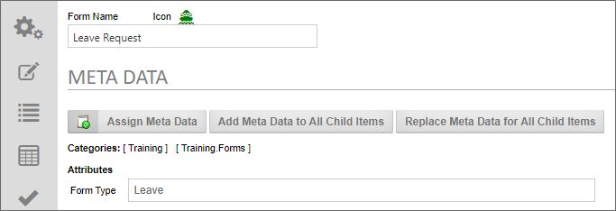
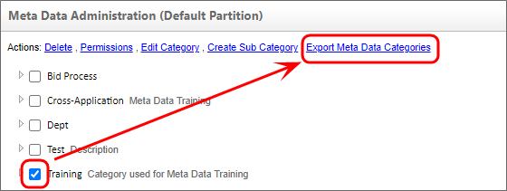

Knowledge Management is defined as the collection of processes or information that governs the creation, dissemination, and utilization of knowledge. Meta Data is a key component of the Knowledge Management features of Process Director.
At the core of Process Director is a management system that contains documents, Forms, images, web pages—essentially, all of your digital content. This management system can be governed by the use of Meta Data. Meta Data is loosely defined as “data about data.” Meta Data, for example, is used by libraries in order to classify data about books. If you wanted to know when the book was received by the library, any summaries of the book by critics, or the last time it was checked out, that’s a good description of Meta Data. Each book, of course, has different content, but the attributes of, say, when a book was checked out, is common to all books, and thus, is "book meta data".
In Process Director, Meta Data can be applied to unrelated objects, so that they can share both a shared set of data and a system of organization that isn't governed by their location in the Content List, or the organizational section that created or uses them. Using Meta Data, objects can be organized and retrieved by any categorization system you desire. Using Meta Data categories and attributes provides a powerful, consistent way to categorize content across an entire partition.
The ability to apply the same Meta Data to completely unrelated objects grants you a power to unify objects in a way that is otherwise unavailable. Normally, in a Knowledge View, your choice is to choose to return either:
What Meta Data enables you to do is apply the same Meta Data to different objects, anywhere in the partition, then build a Knowledge View to search for and return all instances that share the same Meta Data categories and/or attributes.
In a large organization, for example, there might be an application that stores policy documents that apply to the entire organization, while other sections of the organization might have their own applications for storing policy documents that are specific to their operations. All of these applications might do similar things, but they’re otherwise unrelated, and without Meta Data, it’s difficult or impossible to create a Knowledge View that will return the documents from all of these separate applications. Applying Meta Data to these different applications enables you to build Knowledge Views that can collate and return all of the documents from all of the applications in a single place.
Meta Data, therefore, provides an organizational method that enables you to return data in ways that brings together otherwise unrelated object definitions, regardless of who manages them, or their location in the partition.
Process Director provides two main Meta Data elements that can be applied to objects.
Categories are higher-level classifications that can be applied to any object. To refer to our HR example above, every HR form might have the Category "HR" or "Human Resources" applied, so that all Human Resources forms can be found easily by searching that Category. Meta Data categories can be organized hierarchically, meaning that every Meta Data Category can have one or more subordinate categories, which enable you to create a branching tree of Meta Data categories. When assigning a lower-level Category to an object, all the higher-level, or parent, categories in the tree are also assigned to the object.
An Attribute is a data element that can be applied to a Category to store additional Meta Data about objects in that Category. For example, we might have a Meta Data Category for policy documents named "Policies". Each policy document will be assigned to the Policies Category. But there's more information we might need about these policy documents. For instance, we might need to know the effective date or expiration date of the policy. So, we might want to create additional attributes for Policies called "Effective Date" and "Expiry Date". Obviously, these dates will be different for each policy document, but each Attribute will be assigned to every policy document for us to store these dates. Assigning an Attribute to an object automatically assigns the Category to which the Attribute belongs.
So, the Meta Data Category is immutable, which is to say that the Category value is the same for every object assigned to it. An Attribute, on the other hand, is mutable, which means that, while every object has the same Attribute, the value of that Attribute may be different for every object.
Meta Data can be very useful, but Meta Data categories and attributes must be actively managed, and not implemented in an ad hoc manner. Excessive use of Meta Data—or a poorly designed Meta Data schema—can add an excessive administrative burden and may require extensive effort to revise. Use of Meta Data should be planned and implemented with an eye firmly set on the structure of the category hierarchy, and to ensure the ease of maintaining and scaling it over time.
There are three main methods you can use to apply Meta Data to categorize Process Director objects like Form or Process Timeline definitions. Implementers can assign data to each object individually, or to folders in the Content List.
Categories can be assigned by any user who has access to the object definition of any Form or Process Timeline. The Meta Data tab of the object definition in where Meta Data is configured. As categories are assigned to an object, the associated category attributes are displayed with an input field allowing variable data to be entered.

Meta Data applied to object definitions is always inherited by all child instances when they are created, as well as on any attachments or other objects that are created as part of the instance.
Form instances can, additionally, link Meta Data attributes to a Form field. In the Form Controls tab of a Form definition, the Properties dialog box for each Form field contains a Link to Attribute property that, when configured, will save the value of the Form field as a Meta Data Attribute, assigning both the Attribute and its parent Category to the Form instance.
Categories and attributes can be set in the Meta Data tab of a folder’s properties. This configuration will automatically categorize any new object that is created inside that folder. When categories are inherited from the parent folder settings, this inheritance won't replace or overwrite the existing categories configured for an object or subfolder, Instead, the folder Meta Data will be added to the existing category assignments that might be configured in the child objects. Additionally, if a child object already has the same category attributes as the parent folder, those attributes won't be overwritten by the parent folder’s attributes.
Any object instance, such as a Form Instance, can have Meta Data Applied in an ad hoc manner. The Online Form Designer contains both Category Picker and Attribute Picker controls that enable you to choose a different Category or Attribute for every Form instance. When using these controls, you must run the Set Meta Data Custom Task to apply any Meta Data changes you make.
When using object and folder assignment, editing or adding Meta Data to the object/folder definition does not affect the Meta Data of existing objects. To apply Meta Data changes to existing child objects, there are two replication buttons on the Meta Data tab.
Both of these replication settings will only apply to children of the object for which the Meta Data has been configured.
For users of Process Director v4.05 and higher, Meta Data schemas can be exported and imported from the Meta Data Admin screen. This enables you to export the category and attribute definitions and import them onto another system as an XML file.
Category permissions are also enabled for v4.05 and higher, allowing control over who can modify the schema or use them for assignments. A partition admin has full permissions, but other users may not. The addition of permissions means that a user may not see certain categories or sub-categories based on their permission level, both in the meta data schema builder and in the assignment of categories to objects.
Import and export functions can be accessed from the action links at the top of the Meta Data Administration screen. The Import Meta Data Categories action link is available as soon as you open it.
The Export Meta Data Categories action link will appear when you select a Meta Data Category by clicking the check box adjacent to one or more categories.

A couple of things to remember when exporting/importing: